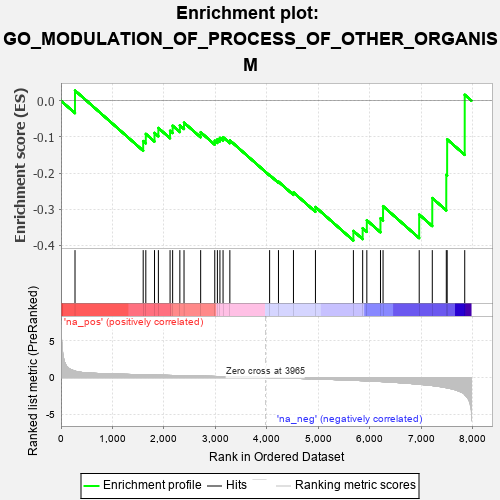
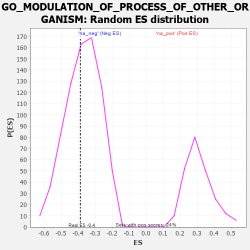

| | | Dataset | 7d |
| Phenotype | NoPhenotypeAvailable |
| Upregulated in class | na_neg |
| GeneSet | GO_MODULATION_OF_PROCESS_OF_OTHER_ORGANISM |
| Enrichment Score (ES) | -0.38630557 |
| Normalized Enrichment Score (NES) | -1.0382359 |
| Nominal p-value | 0.43979058 |
| FDR q-value | 0.8198313 |
| FWER p-Value | 1.0 |
Table: GSEA Results Summary

Fig 1: Enrichment plot: GO_MODULATION_OF_PROCESS_OF_OTHER_ORGANISM
Profile of the Running ES Score & Positions of GeneSet Members on the Rank Ordered List
| PROBE | GENE SYMBOL | GENE_TITLE | RANK IN GENE LIST | RANK METRIC SCORE | RUNNING ES | CORE ENRICHMENT | | 1 | ULK1 | | | 272 | 0.875 | 0.0283 | No |
| 2 | CCNK | | | 1596 | 0.374 | -0.1115 | No |
| 3 | RXRA | | | 1647 | 0.365 | -0.0917 | No |
| 4 | FMR1 | | | 1816 | 0.334 | -0.0889 | No |
| 5 | PC | | | 1891 | 0.321 | -0.0752 | No |
| 6 | CPSF4 | | | 2118 | 0.288 | -0.0831 | No |
| 7 | CHD1 | | | 2168 | 0.282 | -0.0691 | No |
| 8 | REST | | | 2308 | 0.259 | -0.0681 | No |
| 9 | HIPK2 | | | 2389 | 0.247 | -0.0605 | No |
| 10 | PHB2 | | | 2712 | 0.197 | -0.0869 | No |
| 11 | RRP1B | | | 2986 | 0.152 | -0.1105 | No |
| 12 | LEF1 | | | 3037 | 0.144 | -0.1064 | No |
| 13 | HDAC1 | | | 3086 | 0.138 | -0.1026 | No |
| 14 | TAF11 | | | 3147 | 0.130 | -0.1008 | No |
| 15 | CTDP1 | | | 3279 | 0.109 | -0.1095 | No |
| 16 | ATG5 | | | 4051 | -0.016 | -0.2054 | No |
| 17 | RRAGA | | | 4223 | -0.046 | -0.2237 | No |
| 18 | SNW1 | | | 4514 | -0.096 | -0.2533 | No |
| 19 | EP300 | | | 4941 | -0.186 | -0.2936 | No |
| 20 | CASP8 | | | 5678 | -0.369 | -0.3599 | Yes |
| 21 | ATG7 | | | 5858 | -0.420 | -0.3523 | Yes |
| 22 | VAPA | | | 5939 | -0.449 | -0.3303 | Yes |
| 23 | INSR | | | 6204 | -0.538 | -0.3250 | Yes |
| 24 | TFAP4 | | | 6254 | -0.556 | -0.2914 | Yes |
| 25 | FBXL2 | | | 6956 | -0.911 | -0.3145 | Yes |
| 26 | MPEG1 | | | 7210 | -1.083 | -0.2690 | Yes |
| 27 | VAPB | | | 7482 | -1.378 | -0.2045 | Yes |
| 28 | PPIB | | | 7499 | -1.396 | -0.1067 | Yes |
| 29 | SP1 | | | 7840 | -2.321 | 0.0165 | Yes |
Table: GSEA details [plain text format]

Fig 2: GO_MODULATION_OF_PROCESS_OF_OTHER_ORGANISM: Random ES distribution
Gene set null distribution of ES for GO_MODULATION_OF_PROCESS_OF_OTHER_ORGANISM